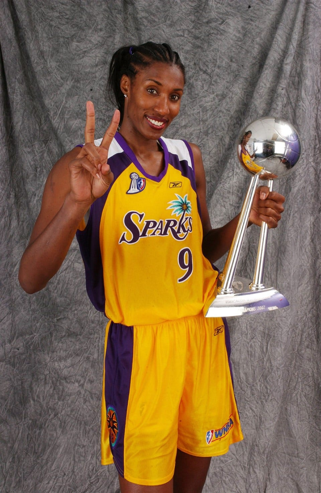

Lisa Leslie is one of the most legendary players in women's basketball history. Over her 12-year WNBA career, she became a trailblazer for female athletes everywhere, breaking records and inspiring future generations. Known for her dominant presence on the court, she was the first woman to dunk in a WNBA game and led her team to multiple championships. Leslie is a three-time WNBA MVP, four-time Olympic gold medalist, and a Hall of Famer. Off the court, she has worked tirelessly to promote women's sports, mentor young athletes, and advocate for equality in sports. Her influence continues to shape the game and inspire young players around the world.
More about Lisa's Career and Life:
Lisa's Stats and Achievements: